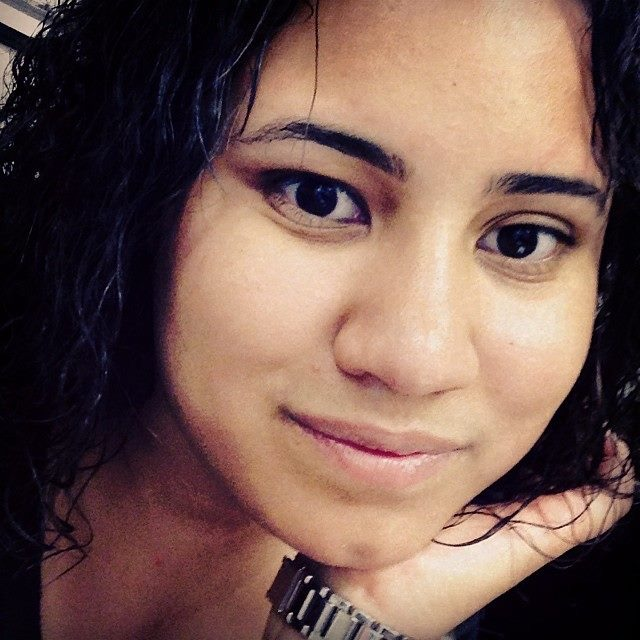

Virginia Otero-Santos
Hi all, consider us your travel gurus!
What makes us experts? We are passionate about visiting new places,
venturing outside the subjective boundaries that confine us, and immersing
ourselse in local cultures. In my experience, traveling is a soul enriching
adventure to learn more about others and yourself. I was born in the United
States, my family is from Puerto Rico, and I recently moved to London
to puruse a masters in organziational behavior. I've been to 20 States
in the USA and 57 countries. It's not about how many places I've been
to but about how I have grown from what I learned during my travels.
Wanna know more?